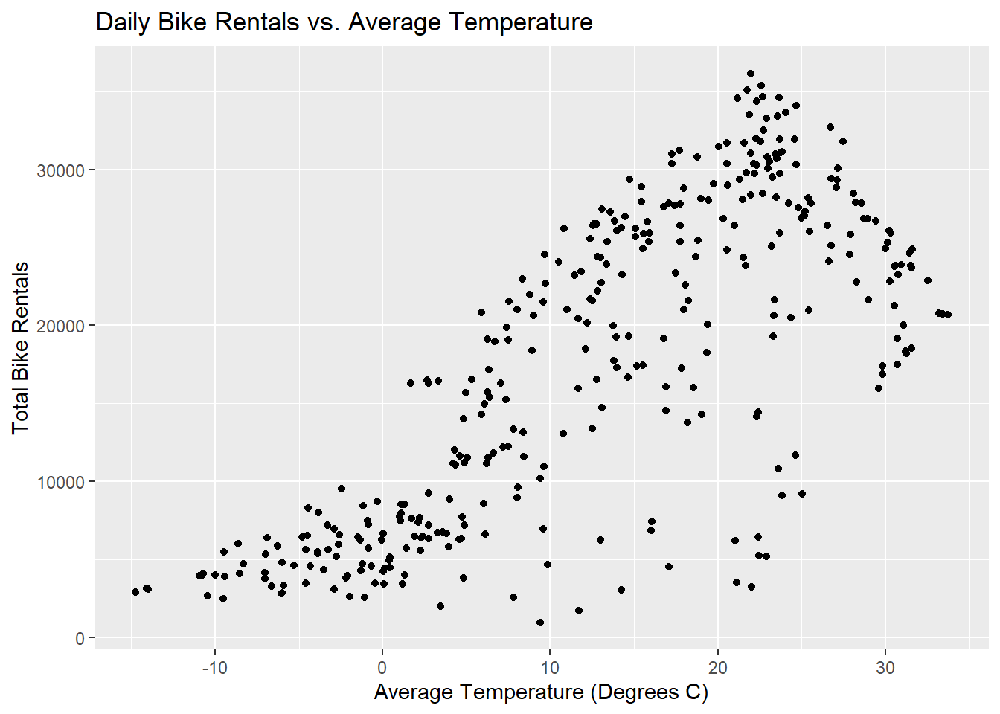

library(tidyverse)
library(lubridate)
library(tidymodels)
set.seed(123)HW8
Read Data
The SeoulBikeData.csv contains characters not encoded in UTF-8 (the default encoding in readr). Because of this, we specify the encoding as latin1.
data <- read_csv("SeoulBikeData.csv", locale=locale(encoding="latin1"))EDA
Missing Values
First we check for missing values and luckily there are none to consider
anyNA(data)[1] FALSECheck Columns
Check the columns and the unique levels of chatagorical variables.
glimpse(data)Rows: 8,760
Columns: 14
$ Date <chr> "01/12/2017", "01/12/2017", "01/12/2017", …
$ `Rented Bike Count` <dbl> 254, 204, 173, 107, 78, 100, 181, 460, 930…
$ Hour <dbl> 0, 1, 2, 3, 4, 5, 6, 7, 8, 9, 10, 11, 12, …
$ `Temperature(°C)` <dbl> -5.2, -5.5, -6.0, -6.2, -6.0, -6.4, -6.6, …
$ `Humidity(%)` <dbl> 37, 38, 39, 40, 36, 37, 35, 38, 37, 27, 24…
$ `Wind speed (m/s)` <dbl> 2.2, 0.8, 1.0, 0.9, 2.3, 1.5, 1.3, 0.9, 1.…
$ `Visibility (10m)` <dbl> 2000, 2000, 2000, 2000, 2000, 2000, 2000, …
$ `Dew point temperature(°C)` <dbl> -17.6, -17.6, -17.7, -17.6, -18.6, -18.7, …
$ `Solar Radiation (MJ/m2)` <dbl> 0.00, 0.00, 0.00, 0.00, 0.00, 0.00, 0.00, …
$ `Rainfall(mm)` <dbl> 0, 0, 0, 0, 0, 0, 0, 0, 0, 0, 0, 0, 0, 0, …
$ `Snowfall (cm)` <dbl> 0, 0, 0, 0, 0, 0, 0, 0, 0, 0, 0, 0, 0, 0, …
$ Seasons <chr> "Winter", "Winter", "Winter", "Winter", "W…
$ Holiday <chr> "No Holiday", "No Holiday", "No Holiday", …
$ `Functioning Day` <chr> "Yes", "Yes", "Yes", "Yes", "Yes", "Yes", …unique(data$Seasons)[1] "Winter" "Spring" "Summer" "Autumn"unique(data$Holiday)[1] "No Holiday" "Holiday" unique(data$`Functioning Day`)[1] "Yes" "No" Convert Date Column
Using lubridate to convert the date column to a date object.
data$Date <- dmy(data$Date)Categorical Columns to Factors
data$Seasons <- as.factor(data$Seasons)
data$Holiday <- as.factor(data$Holiday)
data$`Functioning Day` <- as.factor(data$`Functioning Day`)Rename Columns
data <- data |> rename(
rented_bike_count = `Rented Bike Count`,
temperature = `Temperature(°C)`,
humidity = `Humidity(%)`,
wind_speed = `Wind speed (m/s)`,
visibility = `Visibility (10m)`,
dew_point_temp = `Dew point temperature(°C)`,
solar_radiation = `Solar Radiation (MJ/m2)`,
rainfall = `Rainfall(mm)`,
snowfall = `Snowfall (cm)`,
functioning_day = `Functioning Day`,
date = Date,
hour = Hour,
season = Seasons,
holiday = Holiday
)
glimpse(data)Rows: 8,760
Columns: 14
$ date <date> 2017-12-01, 2017-12-01, 2017-12-01, 2017-12-01, 201…
$ rented_bike_count <dbl> 254, 204, 173, 107, 78, 100, 181, 460, 930, 490, 339…
$ hour <dbl> 0, 1, 2, 3, 4, 5, 6, 7, 8, 9, 10, 11, 12, 13, 14, 15…
$ temperature <dbl> -5.2, -5.5, -6.0, -6.2, -6.0, -6.4, -6.6, -7.4, -7.6…
$ humidity <dbl> 37, 38, 39, 40, 36, 37, 35, 38, 37, 27, 24, 21, 23, …
$ wind_speed <dbl> 2.2, 0.8, 1.0, 0.9, 2.3, 1.5, 1.3, 0.9, 1.1, 0.5, 1.…
$ visibility <dbl> 2000, 2000, 2000, 2000, 2000, 2000, 2000, 2000, 2000…
$ dew_point_temp <dbl> -17.6, -17.6, -17.7, -17.6, -18.6, -18.7, -19.5, -19…
$ solar_radiation <dbl> 0.00, 0.00, 0.00, 0.00, 0.00, 0.00, 0.00, 0.00, 0.01…
$ rainfall <dbl> 0, 0, 0, 0, 0, 0, 0, 0, 0, 0, 0, 0, 0, 0, 0, 0, 0, 0…
$ snowfall <dbl> 0, 0, 0, 0, 0, 0, 0, 0, 0, 0, 0, 0, 0, 0, 0, 0, 0, 0…
$ season <fct> Winter, Winter, Winter, Winter, Winter, Winter, Wint…
$ holiday <fct> No Holiday, No Holiday, No Holiday, No Holiday, No H…
$ functioning_day <fct> Yes, Yes, Yes, Yes, Yes, Yes, Yes, Yes, Yes, Yes, Ye…Summary Statistics
Reusable function for grouped sumary stats
summary(data) date rented_bike_count hour temperature
Min. :2017-12-01 Min. : 0.0 Min. : 0.00 Min. :-17.80
1st Qu.:2018-03-02 1st Qu.: 191.0 1st Qu.: 5.75 1st Qu.: 3.50
Median :2018-06-01 Median : 504.5 Median :11.50 Median : 13.70
Mean :2018-06-01 Mean : 704.6 Mean :11.50 Mean : 12.88
3rd Qu.:2018-08-31 3rd Qu.:1065.2 3rd Qu.:17.25 3rd Qu.: 22.50
Max. :2018-11-30 Max. :3556.0 Max. :23.00 Max. : 39.40
humidity wind_speed visibility dew_point_temp
Min. : 0.00 Min. :0.000 Min. : 27 Min. :-30.600
1st Qu.:42.00 1st Qu.:0.900 1st Qu.: 940 1st Qu.: -4.700
Median :57.00 Median :1.500 Median :1698 Median : 5.100
Mean :58.23 Mean :1.725 Mean :1437 Mean : 4.074
3rd Qu.:74.00 3rd Qu.:2.300 3rd Qu.:2000 3rd Qu.: 14.800
Max. :98.00 Max. :7.400 Max. :2000 Max. : 27.200
solar_radiation rainfall snowfall season
Min. :0.0000 Min. : 0.0000 Min. :0.00000 Autumn:2184
1st Qu.:0.0000 1st Qu.: 0.0000 1st Qu.:0.00000 Spring:2208
Median :0.0100 Median : 0.0000 Median :0.00000 Summer:2208
Mean :0.5691 Mean : 0.1487 Mean :0.07507 Winter:2160
3rd Qu.:0.9300 3rd Qu.: 0.0000 3rd Qu.:0.00000
Max. :3.5200 Max. :35.0000 Max. :8.80000
holiday functioning_day
Holiday : 432 No : 295
No Holiday:8328 Yes:8465
summarize_bike_rentals <- function(data, group_vars) {
data |>
group_by(across(all_of(group_vars))) |>
summarize(
min_bike_count = min(rented_bike_count, na.rm = TRUE),
mean_bike_count = mean(rented_bike_count, na.rm = TRUE),
median_bike_count = median(rented_bike_count, na.rm = TRUE),
max_bike_count = max(rented_bike_count, na.rm = TRUE),
sd_bike_count = sd(rented_bike_count, na.rm = TRUE),
.groups = "drop"
) |>
knitr::kable()
}Grouped by Catagorical Variables
summarize_bike_rentals(data, "season")| season | min_bike_count | mean_bike_count | median_bike_count | max_bike_count | sd_bike_count |
|---|---|---|---|---|---|
| Autumn | 0 | 819.5980 | 763.5 | 3298 | 651.0856 |
| Spring | 0 | 730.0312 | 583.0 | 3251 | 621.5096 |
| Summer | 9 | 1034.0734 | 905.5 | 3556 | 690.2448 |
| Winter | 3 | 225.5412 | 203.0 | 937 | 150.3722 |
summarize_bike_rentals(data, "holiday")| holiday | min_bike_count | mean_bike_count | median_bike_count | max_bike_count | sd_bike_count |
|---|---|---|---|---|---|
| Holiday | 0 | 499.7569 | 240.0 | 2400 | 570.7728 |
| No Holiday | 0 | 715.2280 | 524.5 | 3556 | 646.8791 |
Note that the No Functioning Days have no statistics to report
summarize_bike_rentals(data, "functioning_day")| functioning_day | min_bike_count | mean_bike_count | median_bike_count | max_bike_count | sd_bike_count |
|---|---|---|---|---|---|
| No | 0 | 0.000 | 0 | 0 | 0.0000 |
| Yes | 2 | 729.157 | 542 | 3556 | 642.3512 |
Subset on Functioning Days
functioning_data <- data |> filter(functioning_day == "Yes")Summarize Across the Hours
- Summarize across the hours so that each day has one observation associated with it.
- Group by the date, seasons, and holiday variables.
- Find the sum of the bike_count, rainfall, and snowfall variables
- Find the mean of all the weather related variables.
daily_functioning_data <- functioning_data |>
group_by(date, season, holiday) |>
summarize(
total_bike_count = sum(rented_bike_count),
total_rainfall = sum(rainfall),
total_snowfall = sum(snowfall),
avg_temperature = mean(temperature),
avg_humidity = mean(humidity),
avg_wind_speed = mean(wind_speed),
avg_visibility = mean(visibility),
avg_dew_point_temp = mean(dew_point_temp),
avg_solar_radiation = mean(solar_radiation),
.groups = "drop"
)
summary(daily_functioning_data) date season holiday total_bike_count
Min. :2017-12-01 Autumn:81 Holiday : 17 Min. : 977
1st Qu.:2018-02-27 Spring:90 No Holiday:336 1st Qu.: 6967
Median :2018-05-28 Summer:92 Median :18563
Mean :2018-05-28 Winter:90 Mean :17485
3rd Qu.:2018-08-24 3rd Qu.:26285
Max. :2018-11-30 Max. :36149
total_rainfall total_snowfall avg_temperature avg_humidity
Min. : 0.000 Min. : 0.000 Min. :-14.738 Min. :22.25
1st Qu.: 0.000 1st Qu.: 0.000 1st Qu.: 3.304 1st Qu.:47.58
Median : 0.000 Median : 0.000 Median : 13.738 Median :57.17
Mean : 3.576 Mean : 1.863 Mean : 12.776 Mean :58.17
3rd Qu.: 0.500 3rd Qu.: 0.000 3rd Qu.: 22.592 3rd Qu.:67.71
Max. :95.500 Max. :78.700 Max. : 33.742 Max. :95.88
avg_wind_speed avg_visibility avg_dew_point_temp avg_solar_radiation
Min. :0.6625 Min. : 214.3 Min. :-27.750 Min. :0.02917
1st Qu.:1.3042 1st Qu.:1087.0 1st Qu.: -5.188 1st Qu.:0.28333
Median :1.6583 Median :1557.8 Median : 4.612 Median :0.56500
Mean :1.7261 Mean :1434.0 Mean : 3.954 Mean :0.56773
3rd Qu.:1.9542 3rd Qu.:1874.3 3rd Qu.: 14.921 3rd Qu.:0.82000
Max. :4.0000 Max. :2000.0 Max. : 25.038 Max. :1.21667 Basic Summary Stats and Correlations
summary(daily_functioning_data$total_bike_count) Min. 1st Qu. Median Mean 3rd Qu. Max.
977 6967 18563 17485 26285 36149 numeric_vars <- daily_functioning_data |> select_if(is.numeric)
cor_matrix <- cor(numeric_vars, use = "complete.obs")
cor_matrix |> knitr::kable()| total_bike_count | total_rainfall | total_snowfall | avg_temperature | avg_humidity | avg_wind_speed | avg_visibility | avg_dew_point_temp | avg_solar_radiation | |
|---|---|---|---|---|---|---|---|---|---|
| total_bike_count | 1.0000000 | -0.2391091 | -0.2652911 | 0.7530767 | 0.0358870 | -0.1928814 | 0.1659937 | 0.6504765 | 0.7358929 |
| total_rainfall | -0.2391091 | 1.0000000 | -0.0231340 | 0.1445173 | 0.5286426 | -0.1016758 | -0.2219939 | 0.2645662 | -0.3227041 |
| total_snowfall | -0.2652911 | -0.0231340 | 1.0000000 | -0.2669637 | 0.0653919 | 0.0208816 | -0.1018890 | -0.2095529 | -0.2334306 |
| avg_temperature | 0.7530767 | 0.1445173 | -0.2669637 | 1.0000000 | 0.4041675 | -0.2607218 | 0.0023367 | 0.9627963 | 0.5502743 |
| avg_humidity | 0.0358870 | 0.5286426 | 0.0653919 | 0.4041675 | 1.0000000 | -0.2342578 | -0.5591773 | 0.6320473 | -0.2744497 |
| avg_wind_speed | -0.1928814 | -0.1016758 | 0.0208816 | -0.2607218 | -0.2342578 | 1.0000000 | 0.2060226 | -0.2877032 | 0.0961263 |
| avg_visibility | 0.1659937 | -0.2219939 | -0.1018890 | 0.0023367 | -0.5591773 | 0.2060226 | 1.0000000 | -0.1535516 | 0.2713959 |
| avg_dew_point_temp | 0.6504765 | 0.2645662 | -0.2095529 | 0.9627963 | 0.6320473 | -0.2877032 | -0.1535516 | 1.0000000 | 0.3831571 |
| avg_solar_radiation | 0.7358929 | -0.3227041 | -0.2334306 | 0.5502743 | -0.2744497 | 0.0961263 | 0.2713959 | 0.3831571 | 1.0000000 |
Visual
Since Average temperature is the most highly correlated with Bike rentals, let’s plot it and have a look.
ggplot(daily_functioning_data,
aes(x = avg_temperature,
y = total_bike_count)
) +
geom_point() +
labs(
title = "Daily Bike Rentals vs. Average Temperature",
x = "Average Temperature (Degrees C)",
y = "Total Bike Rentals"
)
Split Data
Note: It was mentioned in the lecture that this might be done before our EDA to avoid the potential of involving our test set. Here we are following the guidelines set in the assignment.
data_split <- initial_split(daily_functioning_data,
prop = 0.75,
strata = season)
train_data <- training(data_split)
test_data <- testing(data_split)
cv_folds <- vfold_cv(train_data, v = 10)
cv_folds# 10-fold cross-validation
# A tibble: 10 × 2
splits id
<list> <chr>
1 <split [236/27]> Fold01
2 <split [236/27]> Fold02
3 <split [236/27]> Fold03
4 <split [237/26]> Fold04
5 <split [237/26]> Fold05
6 <split [237/26]> Fold06
7 <split [237/26]> Fold07
8 <split [237/26]> Fold08
9 <split [237/26]> Fold09
10 <split [237/26]> Fold10Linear Models
Recipes (preprocessing)
Recipe 1
The addition of the weekday/weekend factor in the recipe is causing considerable trouble. Here we will go step by step to show my steps to address the issue. I found this very helpful in understand how the recipe is being constructed.
The matter at hand was simply errors involving column names. “dow” for instance was created as “date_dow”. And the date_dow values were three letter abbreviations for the days. The errors have been identified and removed for this assignement.
show_glimpse <- function(recipe) {
recipe |>
prep(training = train_data) |>
bake(new_data = NULL) |>
glimpse()
}
debug_recipe <- recipe(total_bike_count ~ ., data = train_data) |>
update_role(date, new_role = "ID") |>
step_date(date, features = "dow")
show_glimpse(debug_recipe)Rows: 263
Columns: 13
$ date <date> 2018-09-05, 2018-09-06, 2018-09-07, 2018-09-08, 2…
$ season <fct> Autumn, Autumn, Autumn, Autumn, Autumn, Autumn, Au…
$ holiday <fct> No Holiday, No Holiday, No Holiday, No Holiday, No…
$ total_rainfall <dbl> 0.0, 0.0, 1.5, 0.0, 0.0, 0.0, 0.0, 0.0, 0.5, 0.2, …
$ total_snowfall <dbl> 0, 0, 0, 0, 0, 0, 0, 0, 0, 0, 0, 0, 0, 0, 0, 0, 0,…
$ avg_temperature <dbl> 23.837500, 24.250000, 22.158333, 21.691667, 21.958…
$ avg_humidity <dbl> 61.79167, 70.79167, 56.87500, 48.66667, 49.45833, …
$ avg_wind_speed <dbl> 2.5041667, 1.8958333, 2.4791667, 1.6666667, 1.2333…
$ avg_visibility <dbl> 1954.1667, 1635.2500, 1848.7083, 1982.1250, 1997.1…
$ avg_dew_point_temp <dbl> 15.4416667, 18.2625000, 12.6458333, 9.8041667, 10.…
$ avg_solar_radiation <dbl> 0.9358333, 0.4595833, 0.8158333, 0.9479167, 0.8916…
$ total_bike_count <dbl> 31114, 27838, 30381, 29813, 28354, 30781, 31809, 3…
$ date_dow <fct> Wed, Thu, Fri, Sat, Sun, Mon, Wed, Thu, Fri, Sat, …debug_recipe <- debug_recipe |>
step_mutate(
day_type = factor(
if_else(date_dow %in% c("Sat", "Sun"), "weekend", "weekday")
)
)
show_glimpse(debug_recipe)Rows: 263
Columns: 14
$ date <date> 2018-09-05, 2018-09-06, 2018-09-07, 2018-09-08, 2…
$ season <fct> Autumn, Autumn, Autumn, Autumn, Autumn, Autumn, Au…
$ holiday <fct> No Holiday, No Holiday, No Holiday, No Holiday, No…
$ total_rainfall <dbl> 0.0, 0.0, 1.5, 0.0, 0.0, 0.0, 0.0, 0.0, 0.5, 0.2, …
$ total_snowfall <dbl> 0, 0, 0, 0, 0, 0, 0, 0, 0, 0, 0, 0, 0, 0, 0, 0, 0,…
$ avg_temperature <dbl> 23.837500, 24.250000, 22.158333, 21.691667, 21.958…
$ avg_humidity <dbl> 61.79167, 70.79167, 56.87500, 48.66667, 49.45833, …
$ avg_wind_speed <dbl> 2.5041667, 1.8958333, 2.4791667, 1.6666667, 1.2333…
$ avg_visibility <dbl> 1954.1667, 1635.2500, 1848.7083, 1982.1250, 1997.1…
$ avg_dew_point_temp <dbl> 15.4416667, 18.2625000, 12.6458333, 9.8041667, 10.…
$ avg_solar_radiation <dbl> 0.9358333, 0.4595833, 0.8158333, 0.9479167, 0.8916…
$ total_bike_count <dbl> 31114, 27838, 30381, 29813, 28354, 30781, 31809, 3…
$ date_dow <fct> Wed, Thu, Fri, Sat, Sun, Mon, Wed, Thu, Fri, Sat, …
$ day_type <fct> weekday, weekday, weekday, weekend, weekend, weekd…debug_recipe <- debug_recipe |>
step_rm(date_dow)
show_glimpse(debug_recipe)Rows: 263
Columns: 13
$ date <date> 2018-09-05, 2018-09-06, 2018-09-07, 2018-09-08, 2…
$ season <fct> Autumn, Autumn, Autumn, Autumn, Autumn, Autumn, Au…
$ holiday <fct> No Holiday, No Holiday, No Holiday, No Holiday, No…
$ total_rainfall <dbl> 0.0, 0.0, 1.5, 0.0, 0.0, 0.0, 0.0, 0.0, 0.5, 0.2, …
$ total_snowfall <dbl> 0, 0, 0, 0, 0, 0, 0, 0, 0, 0, 0, 0, 0, 0, 0, 0, 0,…
$ avg_temperature <dbl> 23.837500, 24.250000, 22.158333, 21.691667, 21.958…
$ avg_humidity <dbl> 61.79167, 70.79167, 56.87500, 48.66667, 49.45833, …
$ avg_wind_speed <dbl> 2.5041667, 1.8958333, 2.4791667, 1.6666667, 1.2333…
$ avg_visibility <dbl> 1954.1667, 1635.2500, 1848.7083, 1982.1250, 1997.1…
$ avg_dew_point_temp <dbl> 15.4416667, 18.2625000, 12.6458333, 9.8041667, 10.…
$ avg_solar_radiation <dbl> 0.9358333, 0.4595833, 0.8158333, 0.9479167, 0.8916…
$ total_bike_count <dbl> 31114, 27838, 30381, 29813, 28354, 30781, 31809, 3…
$ day_type <fct> weekday, weekday, weekday, weekend, weekend, weekd…debug_recipe <- debug_recipe |>
step_dummy(season, holiday, day_type) |>
step_normalize(all_numeric(), -all_outcomes())
show_glimpse(debug_recipe)Rows: 263
Columns: 15
$ date <date> 2018-09-05, 2018-09-06, 2018-09-07, 2018-09-08, 2…
$ total_rainfall <dbl> -0.2970185, -0.2970185, -0.1773679, -0.2970185, -0…
$ total_snowfall <dbl> -0.2179228, -0.2179228, -0.2179228, -0.2179228, -0…
$ avg_temperature <dbl> 0.942813132, 0.977863864, 0.800131869, 0.760478516…
$ avg_humidity <dbl> 0.21420205, 0.81794255, -0.11561916, -0.66625286, …
$ avg_wind_speed <dbl> 1.32331031, 0.28870706, 1.28079237, -0.10104074, -…
$ avg_visibility <dbl> 1.05187245, 0.41451440, 0.84111295, 1.10774745, 1.…
$ avg_dew_point_temp <dbl> 0.87630133, 1.09270791, 0.66181269, 0.44380783, 0.…
$ avg_solar_radiation <dbl> 1.17578189, -0.32588618, 0.79740883, 1.21388195, 1…
$ total_bike_count <dbl> 31114, 27838, 30381, 29813, 28354, 30781, 31809, 3…
$ season_Spring <dbl> -0.5835555, -0.5835555, -0.5835555, -0.5835555, -0…
$ season_Summer <dbl> -0.595246, -0.595246, -0.595246, -0.595246, -0.595…
$ season_Winter <dbl> -0.5835555, -0.5835555, -0.5835555, -0.5835555, -0…
$ holiday_No.Holiday <dbl> 0.1984324, 0.1984324, 0.1984324, 0.1984324, 0.1984…
$ day_type_weekend <dbl> -0.6362954, -0.6362954, -0.6362954, 1.5656215, 1.5…All together now:
recipe1 <- recipe(total_bike_count ~ ., data = train_data) |>
update_role(date, new_role = "ID") |>
step_date(date, features = "dow") |>
step_mutate(
day_type = factor(
if_else(date_dow %in% c("Sat", "Sun"), "weekend", "weekday")
)
) |>
step_rm(date_dow) |>
step_dummy(season, holiday, day_type) |>
step_normalize(all_numeric(), -all_outcomes())
recipe1── Recipe ──────────────────────────────────────────────────────────────────────── Inputs Number of variables by roleoutcome: 1
predictor: 10
ID: 1── Operations • Date features from: date• Variable mutation for: factor(if_else(date_dow %in% c("Sat", "Sun"),
"weekend", "weekday"))• Variables removed: date_dow• Dummy variables from: season, holiday, day_type• Centering and scaling for: all_numeric() and -all_outcomes()Recipe 2
Unclear to the reason, but starts_with(“season”) did not work. Had to create the interactions manually in spite of the lecture notes in order to avoid the error.
Also did a google search to address the following warning: prediction from rank-deficient fit; consider predict(., rankdeficient=“NA”). This lead to the addistion of the step_corr() function.
recipe2 <- recipe1 |>
step_interact(terms = ~ season_Spring:holiday_No.Holiday +
season_Summer:holiday_No.Holiday +
season_Winter:holiday_No.Holiday +
season_Spring:avg_temperature +
season_Summer:avg_temperature +
season_Winter:avg_temperature +
avg_temperature:total_rainfall)
show_glimpse(recipe2)Rows: 263
Columns: 22
$ date <date> 2018-09-05, 2018-09-06, 2018-09-07…
$ total_rainfall <dbl> -0.2970185, -0.2970185, -0.1773679,…
$ total_snowfall <dbl> -0.2179228, -0.2179228, -0.2179228,…
$ avg_temperature <dbl> 0.942813132, 0.977863864, 0.8001318…
$ avg_humidity <dbl> 0.21420205, 0.81794255, -0.11561916…
$ avg_wind_speed <dbl> 1.32331031, 0.28870706, 1.28079237,…
$ avg_visibility <dbl> 1.05187245, 0.41451440, 0.84111295,…
$ avg_dew_point_temp <dbl> 0.87630133, 1.09270791, 0.66181269,…
$ avg_solar_radiation <dbl> 1.17578189, -0.32588618, 0.79740883…
$ total_bike_count <dbl> 31114, 27838, 30381, 29813, 28354, …
$ season_Spring <dbl> -0.5835555, -0.5835555, -0.5835555,…
$ season_Summer <dbl> -0.595246, -0.595246, -0.595246, -0…
$ season_Winter <dbl> -0.5835555, -0.5835555, -0.5835555,…
$ holiday_No.Holiday <dbl> 0.1984324, 0.1984324, 0.1984324, 0.…
$ day_type_weekend <dbl> -0.6362954, -0.6362954, -0.6362954,…
$ season_Spring_x_holiday_No.Holiday <dbl> -0.1157963, -0.1157963, -0.1157963,…
$ holiday_No.Holiday_x_season_Summer <dbl> -0.1181161, -0.1181161, -0.1181161,…
$ holiday_No.Holiday_x_season_Winter <dbl> -0.1157963, -0.1157963, -0.1157963,…
$ season_Spring_x_avg_temperature <dbl> -0.550183751, -0.570637797, -0.4669…
$ season_Summer_x_avg_temperature <dbl> -0.561205702, -0.582069508, -0.4762…
$ season_Winter_x_avg_temperature <dbl> -0.550183751, -0.570637797, -0.4669…
$ avg_temperature_x_total_rainfall <dbl> -0.280032902, -0.290443616, -0.1419…Recipe 3
recipe3 <- recipe2 |>
step_poly(avg_temperature, total_rainfall, total_snowfall, avg_humidity,
avg_wind_speed, avg_visibility, avg_dew_point_temp,
avg_solar_radiation, degree = 2)
show_glimpse(recipe3)Rows: 263
Columns: 30
$ date <date> 2018-09-05, 2018-09-06, 2018-09-07…
$ total_bike_count <dbl> 31114, 27838, 30381, 29813, 28354, …
$ season_Spring <dbl> -0.5835555, -0.5835555, -0.5835555,…
$ season_Summer <dbl> -0.595246, -0.595246, -0.595246, -0…
$ season_Winter <dbl> -0.5835555, -0.5835555, -0.5835555,…
$ holiday_No.Holiday <dbl> 0.1984324, 0.1984324, 0.1984324, 0.…
$ day_type_weekend <dbl> -0.6362954, -0.6362954, -0.6362954,…
$ season_Spring_x_holiday_No.Holiday <dbl> -0.1157963, -0.1157963, -0.1157963,…
$ holiday_No.Holiday_x_season_Summer <dbl> -0.1181161, -0.1181161, -0.1181161,…
$ holiday_No.Holiday_x_season_Winter <dbl> -0.1157963, -0.1157963, -0.1157963,…
$ season_Spring_x_avg_temperature <dbl> -0.550183751, -0.570637797, -0.4669…
$ season_Summer_x_avg_temperature <dbl> -0.561205702, -0.582069508, -0.4762…
$ season_Winter_x_avg_temperature <dbl> -0.550183751, -0.570637797, -0.4669…
$ avg_temperature_x_total_rainfall <dbl> -0.280032902, -0.290443616, -0.1419…
$ avg_temperature_poly_1 <dbl> 0.0582471898, 0.0604126312, 0.04943…
$ avg_temperature_poly_2 <dbl> 4.343638e-03, 8.936806e-03, -1.2777…
$ total_rainfall_poly_1 <dbl> -0.018349862, -0.018349862, -0.0109…
$ total_rainfall_poly_2 <dbl> 0.017787545, 0.017787545, -0.002471…
$ total_snowfall_poly_1 <dbl> -0.01346331, -0.01346331, -0.013463…
$ total_snowfall_poly_2 <dbl> 0.007912355, 0.007912355, 0.0079123…
$ avg_humidity_poly_1 <dbl> 0.013233447, 0.050532660, -0.007142…
$ avg_humidity_poly_2 <dbl> -0.049710700, -0.025703529, -0.0475…
$ avg_wind_speed_poly_1 <dbl> 0.081754384, 0.017836382, 0.0791276…
$ avg_wind_speed_poly_2 <dbl> -0.022889314, -0.051814842, -0.0259…
$ avg_visibility_poly_1 <dbl> 0.064984897, 0.025608785, 0.0519641…
$ avg_visibility_poly_2 <dbl> 0.052485925, -0.039054487, 0.016026…
$ avg_dew_point_temp_poly_1 <dbl> 0.054138077, 0.067507720, 0.0408869…
$ avg_dew_point_temp_poly_2 <dbl> 0.0010118908, 0.0310969311, -0.0230…
$ avg_solar_radiation_poly_1 <dbl> 0.072640048, -0.020133316, 0.049264…
$ avg_solar_radiation_poly_2 <dbl> 0.008080770, -0.053656723, -0.03538…Set Up the Linear Model Engine
lm_spec <- linear_reg() %>% set_engine("lm")
lm_specLinear Regression Model Specification (regression)
Computational engine: lm Workflows
We need to send each recipe through the workflow to get the results.
workflow_and_results <- function(recipe) {
workflow <- workflow() |>
add_recipe(recipe) |>
add_model(lm_spec)
results <- fit_resamples(
workflow,
resamples = cv_folds,
metrics = metric_set(rmse)
)
results
}
results1 <- workflow_and_results(recipe1)
results2 <- workflow_and_results(recipe2)→ A | warning: prediction from rank-deficient fit; consider predict(., rankdeficient="NA")There were issues with some computations A: x1
There were issues with some computations A: x1results3 <- workflow_and_results(recipe3)→ A | warning: prediction from rank-deficient fit; consider predict(., rankdeficient="NA")There were issues with some computations A: x1
There were issues with some computations A: x1all_results <- bind_rows(
results1 |> collect_metrics() |> mutate(model = "No Interactions"),
results2 |> collect_metrics() |> mutate(model = "Interactions"),
results3 |> collect_metrics() |> mutate(model = "Interactions + Poly")
)
ggplot(all_results, aes(x = model, y = mean, group = .metric, color = .metric)) +
geom_line() +
geom_point(size = 3) +
geom_point(data = slice_min(all_results, order_by = mean, n = 1),
shape = 1, color = "black", size = 6, stroke = 1.5) +
labs(title = "Model Performance Comparison", x = "Model", y = "RMSE") +
theme_minimal() +
theme(legend.position = "none")Fit Best Model
The model with interactions and polynomial terms had the minimum RMSE amongst the three tested. With this we will fit that model to the entire training data set.
final_workflow <- workflow() |>
add_recipe(recipe3) |>
add_model(lm_spec)
final_fit <- last_fit(final_workflow, split = data_split)Compute the RMSE metric on the test set.
test_metrics <- final_fit |> collect_metrics()
test_metrics# A tibble: 2 × 4
.metric .estimator .estimate .config
<chr> <chr> <dbl> <chr>
1 rmse standard 2911. Preprocessor1_Model1
2 rsq standard 0.919 Preprocessor1_Model1Obtain the final model (fit on the entire training set) coefficient table
final_coefficients <- final_fit |>
extract_fit_parsnip() |>
tidy()
final_coefficients# A tibble: 29 × 5
term estimate std.error statistic p.value
<chr> <dbl> <dbl> <dbl> <dbl>
1 (Intercept) 20261. 1602. 12.6 2.81e-28
2 season_Spring -2127. 264. -8.06 4.00e-14
3 season_Summer 6316. 973. 6.49 5.07e-10
4 season_Winter -4972. 1011. -4.92 1.65e- 6
5 holiday_No.Holiday 932. 217. 4.30 2.48e- 5
6 day_type_weekend -1106. 180. -6.14 3.49e- 9
7 season_Spring_x_holiday_No.Holiday 156. 317. 0.494 6.22e- 1
8 holiday_No.Holiday_x_season_Summer -239. 246. -0.971 3.33e- 1
9 holiday_No.Holiday_x_season_Winter -361. 207. -1.74 8.30e- 2
10 season_Spring_x_avg_temperature 1924. 492. 3.91 1.21e- 4
# ℹ 19 more rows